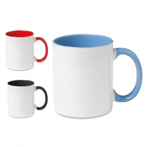
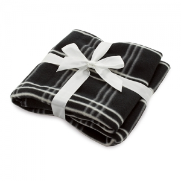
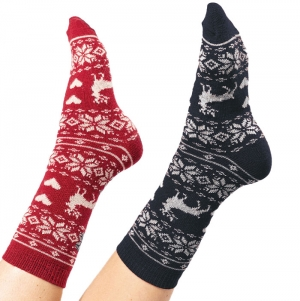

Uma estação, várias condições de utilização
Uma receção em espaço aquecido, uma deslocação diária e um evento no exterior colocam perguntas diferentes. Identifique onde o artigo será usado e se a pessoa terá de o transportar, guardar molhado ou utilizar com outras peças de roupa.
O IPMA disponibiliza normais climatológicas de temperatura e precipitação por locais de observação. São uma referência de clima, não uma previsão para a data da atividade. Consulte também a informação meteorológica pertinente ao planeamento. Fonte
Contexto climático sem uma tradição inventada
As fontes selecionadas para este guia não estabelecem uma tradição geral de oferecer brindes no Inverno. O foco é a preparação de atividades e deslocações, e não uma suposta origem histórica da oferta sazonal.
Uma campanha de acolhimento, uma formação ou um encontro comunitário podem decorrer nesta estação sem partilharem a mesma história ou finalidade. Quando uma iniciativa invoca um costume local, deve identificar a comunidade e a fonte que o documenta.
Quem organiza e quem utiliza
Organizações, escolas, associações e municípios podem preparar materiais para equipas, visitantes ou participantes. Distinga quem permanece no interior, quem entra e sai e quem trabalha num espaço exterior.
Os objetivos podem ser acolher, organizar o transporte de materiais ou identificar uma equipa. A decisão de oferecer um objeto deve acompanhar esses objetivos; não substitui a organização do local nem os equipamentos necessários à atividade.
Artigos para situações concretas
Canecas e recipientes com tampa: para pausas ou deslocações, avalie o local de consumo, a abertura e a limpeza. A tampa pode servir apenas para beber e não tornar o recipiente estanque dentro de um saco.
Peças têxteis e acessórios: num encontro ou uso diário, o corte e as medidas devem permitir o movimento previsto com outras camadas. A aparência espessa não comprova proteção contra frio, chuva ou vento.
Sacos e bolsas: podem organizar documentos e equipamento no percurso. Confirme acessos e dimensões úteis; a construção visual ou um revestimento não provam impermeabilidade do conjunto.
Cadernos e materiais de reunião: em atividades interiores, podem ser mais pertinentes que um artigo associado ao frio. A estação não obriga a que todas as escolhas tenham uma função climática.
Exemplos em contexto
Estes exemplos relacionam objetos com uma utilização concreta. A escolha depende de quem participa e das condições da atividade; as imagens não comprovam materiais, desempenho ou adequação.
Mantas para pausas e deslocações

Contexto
Uma entrega individual para uso doméstico, pausas ou
viagens, quando a pessoa dispõe de espaço para levar e guardar a peça.
Razão da escolha
Pode continuar a ter uma função depois do
encontro. A escolha é mais pertinente quando corresponde a uma rotina conhecida do
que quando apenas se associa a palavra Inverno a uma oferta.
Aspetos a confirmar
Meça a manta aberta e dobrada, observe
como se guarda e consulte composição e cuidados. Espessura aparente e padrão não
quantificam isolamento térmico. Planeie a personalização tendo em conta a face
visível nas duas posições.
Meias para uma oferta pessoal

Contexto
Um conjunto pessoal ou doméstico, se houver
informação suficiente sobre tamanhos e preferências de quem recebe.
Razão da escolha
O volume reduzido pode simplificar a
apresentação e o transporte. O interesse está no uso real da peça, não numa promessa
genérica de conforto para todas as pessoas.
Aspetos a confirmar
Confirme gama de tamanhos, composição,
costuras e lavagem. A imagem não demonstra propriedades térmicas ou antiderrapantes.
Se não conhecer o tamanho, considere uma alternativa que não dependa dessa
informação.
Avaliar utilização, conforto e limites
Observe como se abre, segura e guarda o objeto nas condições previstas. Numa peça vestível, ensaie posição da mensagem e ajuste; num saco, verifique fechos e o espaço para o conteúdo habitual.
Se for necessária proteção profissional ou um desempenho perante intempéries, procure a documentação aplicável ao artigo. Não apresente vestuário promocional como equipamento de proteção apenas por ser usado no exterior.
Planear alternativas para o local e a entrega
Defina um ponto de entrega adequado ao percurso e uma alternativa se a atividade mudar de espaço. Confirme armazenamento, acesso ao recinto e distribuição por turnos, evitando que a recolha de um artigo dificulte a circulação.
Aprove variantes e medidas antes de confirmar a personalização. Valide prazos de cada etapa e do transporte para o projeto concreto; o calendário deve comportar as aprovações necessárias, sem prometer um tempo fixo de produção.
Utilidade depois da estação
Pergunte se o objeto continuará a ser usado quando a atividade terminar. A utilização prolongada integra o enquadramento de circularidade da Agência Europeia do Ambiente. Fonte Isso não demonstra uma vantagem ambiental do artigo escolhido.
Analise embalagem, possibilidade de limpeza, armazenamento e destino final. Não confunda a intenção de apoiar participantes com proteção efetivamente prestada ou com satisfação demonstrada; recolha informação sobre uso e dificuldades se quiser avaliar a iniciativa.
Personalizar sem comprometer utilização
Observe a mensagem com a peça vestida ou com o recipiente na posição de consumo. Punhos, costuras, pegas e fechos podem reduzir a área visível ou acessível.
Confirme a técnica no material e acabamento concretos, incluindo o cuidado posterior. Não cubra instruções, marcações ou zonas funcionais para aumentar a área do desenho.
Perguntas frequentes
Um saco revestido é impermeável?
Não se conclui isso do revestimento. Fechos, costuras e condições de utilização do artigo completo precisam de documentação.
Uma caneca é obrigatória numa oferta de Inverno?
Não. Escolha pela rotina e pelo local de utilização; um material de reunião pode ser mais útil.
As médias de clima permitem garantir o tempo no dia do evento?
Não. Normais climatológicas e previsão para uma data têm funções diferentes. Fonte